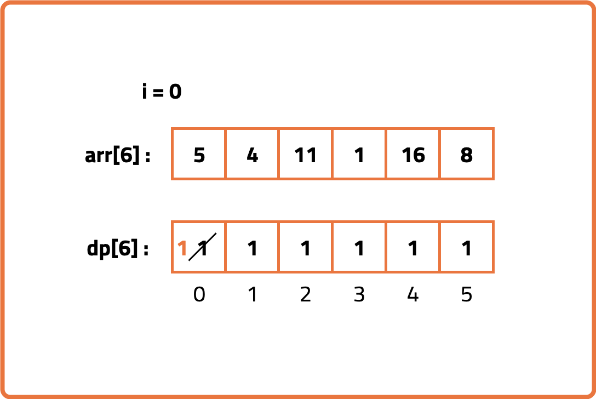
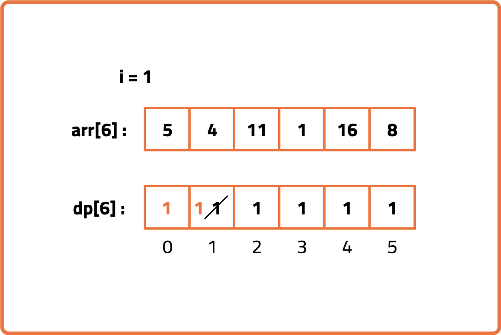
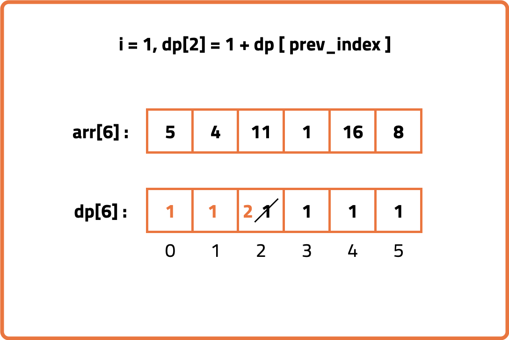
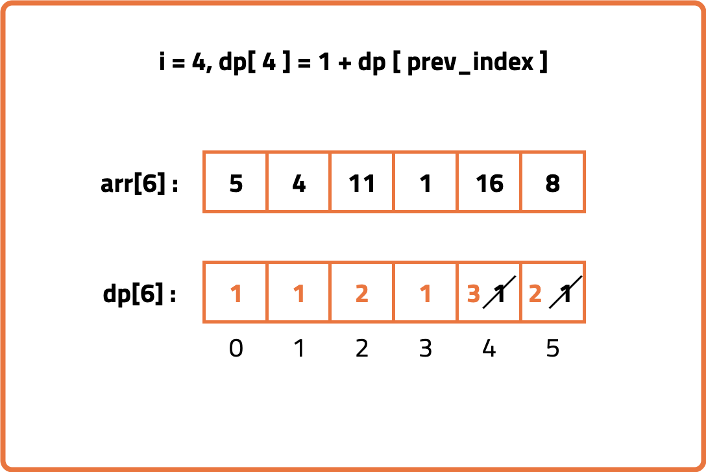

Printing Longest Increasing Subsequence | (DP-42)
Put your HTML text here
Problem Description: Given an array of n integers arr, return the Longest Increasing Subsequence (LIS) that is index-wise lexicographically smallest.
The Longest Increasing Subsequence (LIS) is the longest subsequence where all elements are in strictly increasing order.
A subsequence A1 is index-wise lexicographically smaller than another subsequence A2 if, at the first position where A1 and A2 differ, the element in A1 appears earlier in the array than corresponding element in A2.
Examples
Input: arr = [10, 22, 9, 33, 21, 50, 41, 60, 80] Output: [10, 22, 33, 50, 60, 80] Explanation: The LIS is [10, 22, 33, 50, 60, 80] and it is the lexicographically smallest. Input: arr = [1, 3, 2, 4, 6, 5] Output: [1, 3, 4, 6] Explanation: Possible LIS sequences are [1, 3, 4, 6] and [1, 2, 4, 6]. Since [1, 3, 4, 6] is index-wise lexicographically smaller, it is the result.
Disclaimer: Here is the practice link to help you assess your knowledge better. It's highly recommend trying to solve it before looking at the solution.
Approach
Algorithm
To find the Longest Increasing Subsequence (LIS), we use a 1D DP array where each element at position i stores the length of the LIS ending at index i of the array.
To make this DP array we can follow any of the approach that we learned while finding the length of the Longest Increasing Subsequence.
To make this DP array we can follow any of the approach that we learned while finding the length of the Longest Increasing Subsequence.
- After computing the length of the Longest Increasing Subsequence (LIS) for each element using dynamic programming, start from the element with the maximum LIS value.
- Initialize an empty list or string to store the LIS elements in reverse order.
- From the element with the maximum LIS, move backward through the array to find elements that can form the LIS:
- For the current element, look for a previous element that is smaller and whose LIS value is exactly one less than the current element's LIS.
- Add that previous element to the LIS list and continue the process from that element.
- Repeat this process until you reach the start of the LIS (where LIS value is 1).
- Reverse the collected elements since they were collected backwards to get the actual LIS.




Code
#include <bits/stdc++.h>
using namespace std;
// Solution class for LIS with reconstruction using DP
class Solution {
public:
// Function to return the LIS as a sequence (vector)
vector<int> longestIncreasingSubsequence(vector<int> &nums) {
int n = nums.size();
// DP array to store length of LIS ending at each index
vector<int> dp(n, 1);
// Array to store previous index of LIS element for reconstruction
vector<int> prev(n, -1);
// Compute LIS length for each index
for (int i = 1; i < n; i++) {
for (int j = 0; j < i; j++) {
if (nums[j] < nums[i] && dp[j] + 1 > dp[i]) {
// Update dp[i] and store previous index
dp[i] = dp[j] + 1;
prev[i] = j;
}
}
}
// Find the index of maximum LIS length
int maxLen = 0, maxIndex = 0;
for (int i = 0; i < n; i++) {
if (dp[i] > maxLen) {
maxLen = dp[i];
maxIndex = i;
}
}
// Reconstruct LIS sequence
vector<int> lisSeq;
int curr = maxIndex;
while (curr != -1) {
lisSeq.push_back(nums[curr]);
curr = prev[curr];
}
// Reverse sequence as it was built backwards
reverse(lisSeq.begin(), lisSeq.end());
return lisSeq;
}
};
int main() {
vector<int> nums = {10, 9, 2, 5, 3, 7, 101, 18};
Solution sol;
vector<int> lis = sol.longestIncreasingSubsequence(nums);
cout << "LIS: ";
for (int x : lis) cout << x << " ";
cout << endl;
return 0;
}
Complexity Analysis
Time Complexity: O(N^2), nested loops are used to compute dp array and prev array.Space Complexity: O(N), space used to store DP array and previous array.